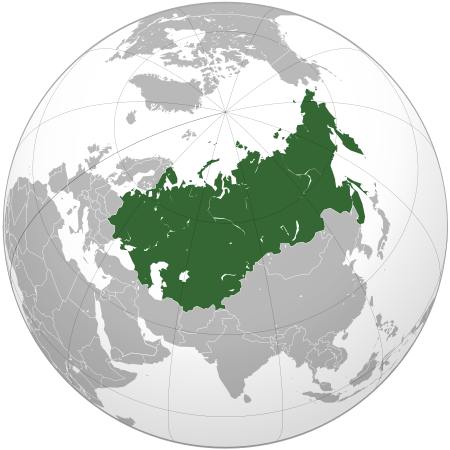

USSR
The Union of Soviet Socialist Republics, abbreviated as the USSR, the Soviet Union, the Union of the SSR is a state in Eurasia that existed from 1922 to 1991.
At the time of the collapse, the USSR occupied almost 1⁄6 of the inhabited land area of the Earth with a population of 294 million people, as well as the 2nd place in the world in terms of industrial production - 16.5% of the world volume and 7th place in the world in terms of national income (3.4%).
The USSR was formed on the territory that by 1917 was occupied by the Russian Empire without Finland, part of the Polish kingdom and some other territories. Go to the section "# Geography of the USSR" war, the result of which was the consolidation of four republics - the RSFSR, the Ukrainian SSR, the Byelorussian SSR and the Transcaucasian SFSR. On December 30, 1922, they united into one state - the Union of SSR - with unified authorities with the capital in Moscow, with de jure retaining the right of each Union republic to freely secede from the Union. Go to section.
June 22, 1941 Germany, with the support of the allies, attacked the USSR. The Great Patriotic War began, after the victory in which the USSR became, along with the USA, a superpower. The Soviet Union dominated the world socialist system, and was also a co-founder of the UN, a permanent member of the UN Security Council with veto power
According to the 1977 Constitution, the USSR was proclaimed a single union multinational socialist stateGo to the section "#Political system and ideology". Union republics were considered sovereign states. The procedure for the withdrawal of the republics from the Union since 1990 was regulated by a special law. The union republic had the right to enter into relations with foreign states, conclude treaties with them and exchange diplomatic and consular representatives, participate in the activities of international organizations. Among the 50 founding countries of the UN, along with the USSR, there were two of its union republics: the BSSR and the Ukrainian SSR
Due to the low efficiency of the economic system, a strong dependence on energy prices, significant costs of the arms race, a massive shortage of goods, ethnic contradictions and other problems in the second half of the 1980s, an economic and political crisis occurred in the USSR. Internal political confrontation has escalated. Attempts to reform the Soviet system (democratization, transition to a market economy and a multi-party system) did not help to resolve the accumulated contradictions. In 1988-1991, there were a number of legislative conflicts between the union center and the union republics. Go to the section "Perestroika (1985-1991)". The consequences of all these events led to the collapse of the USSR (see the reasons for the collapse).
On March 17, 1991, the All-Union referendum on the preservation of the USSR was held, at which 77.85% of the citizens of the Soviet republics who took part in the referendum spoke in favor of preserving the union as a renewed Federation of equal socialist sovereign republics. The attempted coup d'état of the State Emergency Committee in August 1991 caused massive popular demonstrations throughout the USSR in defense of the democratic course of Perestroika and the legally elected state power in 1989 - the deputies of the Congress of People's Deputies of the USSR. The events at the White House in Moscow are considered the epicenter of the confrontation with the putschists. As a result, the attempt to seize power by the State Emergency Committee failed. On December 8, 1991, the three founding states of the Union signed Agreements on the termination of the existence of the USSR and the creation of the CIS. On December 26, 1991, the Council of Republics of the Supreme Soviet of the USSR adopted a declaration on the termination of the existence of the USSR
The Russian Federation was recognized as a de facto state-successor to the USSR in international legal relations and took its place in the UN Security Council. Go to the section "# The collapse of the Soviet Union (1990-1991)" Ukraine, the latter is the successor of the rights and obligations of the Ukrainian SSR and international treaties of the USSR. There is an open question between the states about the state debt of the USSR.
Map of the USSR (1945-1991)
[BACK TO HOME] [BACK TO REPUBLICS]